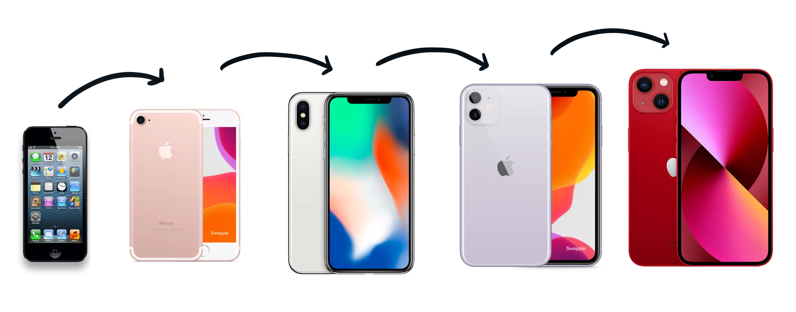

Planned Obsolescence
Electronic devices are made more fragile by competing corporations of the technology industry which catalyse the production of technological advances (Wieringa, 2017). This phenomena of rapidly producing new technology and idealising the idea that devices should be regularly updated is called “[p]lanned obsolescence” (Rubio and Wharton, 2020). It allows corporations to get away with designing devices that need to be replaced over increasingly shorter periods of time and furthermore the development of software which only supports newer and therefore fewer products.